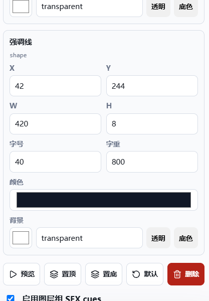
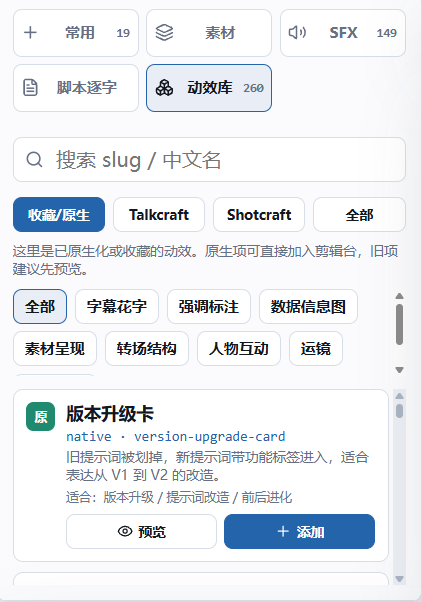
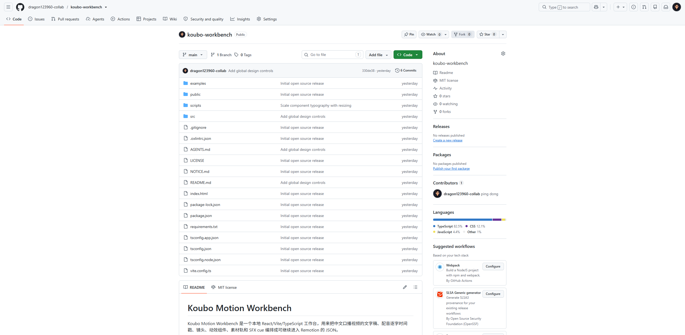

口播视频
WORKBENCH
口播视频前期编排台
最累的 不是写文案 是每句话该配什么画面
字幕、列表、动效、音效，都要和口播节奏对上。
做口播视频，最累的其实不是写文案，是每一句话该配什么画面。
纯手动拖动的问题
最后很容易变成 PPT 拼图
01
字幕
02
列表
03
动效
04
素材
05
SFX
什么时候上字幕，什么时候出列表，什么时候给音效，不能全靠手动猜。
推荐流程
不是空白画布，是先生成 工作台 JSON
1
文字稿先定每页讲什么
2
配音MiniMax 或真人录音
3
逐字 JSONWhisper 对齐时间戳
4
工作台项目AI 先安排组件和素材

先文字稿，再配音，再逐字时间戳，最后生成可导入的工作台 JSON。
常用组件 / 素材 / SFX
真实 1920×1080 舞台
图层属性
脚本时间轴
AI 先安排组件、动效、素材和音效，人再进工作台微调位置、字号、颜色和节奏。

人来做微调
只显示当前图层真正能改的设置
字号和字重上行、下行、列表项都能分开调
颜色和背景继承全片主题，也可以单独覆盖
位置和节奏时间轴拖到任意一秒检查画面
右边只显示当前图层真正能改的设置，底下时间轴能检查任意一秒。
渲染真相统一
预览里看到的，就应该是最终出片
HTML
+
CSS
+
HyperFrames
同一套 DOM 和动效，不再靠导出后才发现换行和遮挡。

工作台预览和最终渲染走同一套画面，换行、遮挡、动效都应该一致。

常用区精简，大库沉淀
只把高频组件放在手边
标题
字幕条
分层列表
步骤线
截图证据
素材画面
真人小窗
SFX
常用组件留下，不常用的进入动效库；以后看到好效果，也能拆成新的原生组件。

准备开源：拿去改，少走弯路
for AI 科普 / 工具解说 / 课程短视频
它更像口播视频的前期编排台。做完这一版，我们会开源出来。